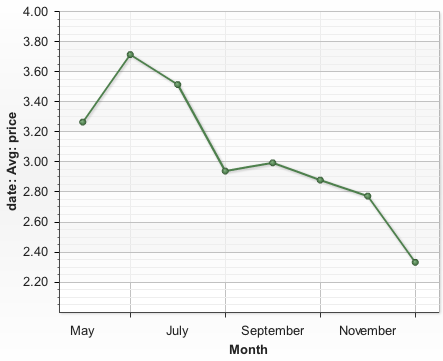
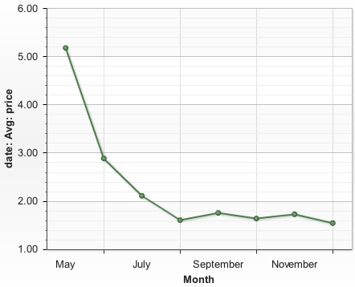
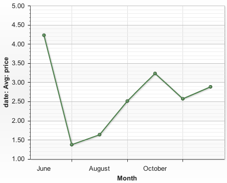

If you’re looking for market feedback on the value of applications, here it is. Using updated data to take a look a pricing trends confirms what I think everyone already knows. Each month, the average price of apps on the store just declines. For example, have a look at the average price of applications (excluding medical applications, whose high prices skew the results).

An average application price that was once nearly $4 has fallen to nearly $2.25. It’s too early to tell, but it certainly doesn’t look like we’ve hit bottom yet, either.
Games
If you look at games, the downward trend is much more dramatic, but prices appear to have stabilized at just under 2 bucks an application. This, of course, begs the question- games are the most popular application in the store, is this because they’re cheap? Or is this really the best we can hope for- that the most popular category of applications on the store is perceived as being worth about $1.50 an application?

Health and Fitness
Health and Fitness is one of the few categories that appears to be reversing this trend. After an initial price drop, this category has seen average prices rise nearly every month, now approaching $3 an application. And it does make sense- after all health and fitness applications are likely to impact your life much more significantly than a game.

Why Are Prices Headed Down?
Why the downward trend overall? There are a lot of factors.
Buyers of consumer mobile applications were already used to paying $5-7 for applications. This set a relatively low ceiling for applications targeted at consumers (who are the main buyer of iPhones).
The inability to trial software means that users have to take a risk that they don’t like the software. This risk has to be priced into the software, reducing the price that can be charged.
The large number of relatively simplistic and useless applications on the store increase the perceived risk when purchasing software. This increased risk of disappointment forces prices down further.
Of course for many applications (lighters, flashlights, geiger counters) there are large number of substitute goods. This drives prices down. (And while we’re on the subject, do these developers call each other in the morning and decide which sort of annoying application they’re going to build today? How is it that 5 geiger counter applications manage to show up on the same day?!)
There is No End in Site
But the real problem here isn’t that customers like cheap applications. It’s that the way the store is structured today is creating a vicious circle of downward spiraling prices. As pricing pressure forces applications to be less expensive, developers need to respond by reducing their investment in the applications (to make them profitable). This in turn reduces the value of the applications, continuing to increase price pressure. Without some kind of change, I’m not sure where the pricing stops.
A couple of suggestions
Let developers get recurring revenue by charging for upgrades or selling subscriptions. This breaks the cycle by allowing developers to profit from further investment, leaving initial prices low, but increasing revenue from satisfied users who continue to use the application.
Grow the user base fast enough that some companies can be profitable even selling something for $.99. Of course, when the price pressure forces the price below $.99, then what?
Or maybe, this is by design. After all, Apple stands to make 30% of the total app sales, and they don’t need to applications to be expensive. In fact, when you consider that they make money on the app transaction, but also that each new application adds value to the iPhone platform, more apps (even if they’re cheap) is probably better for Apple.